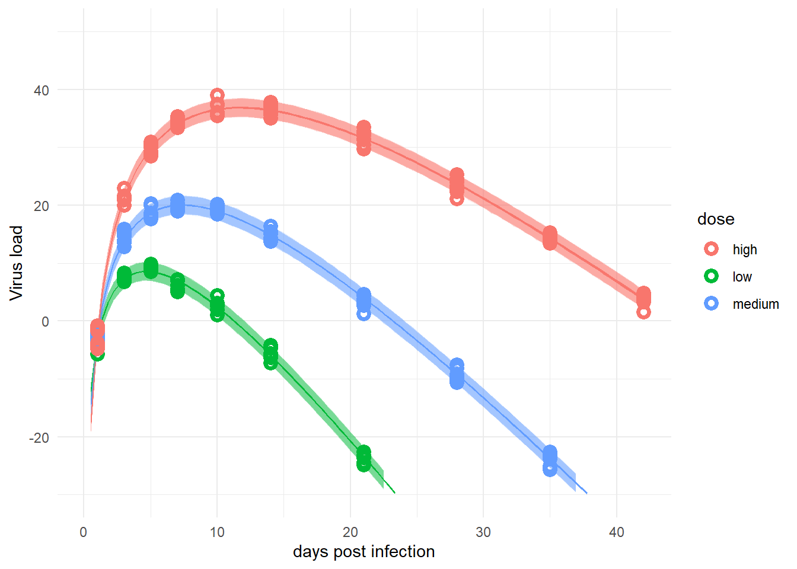
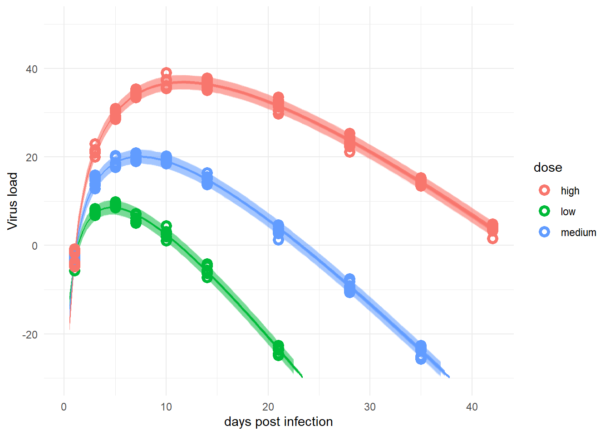
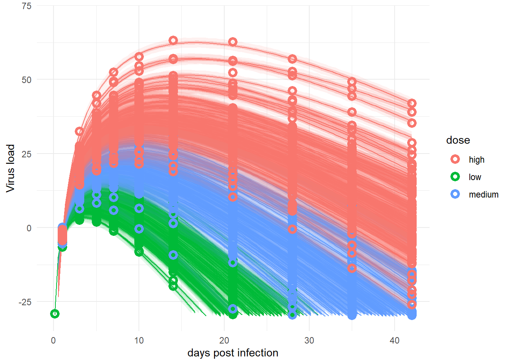
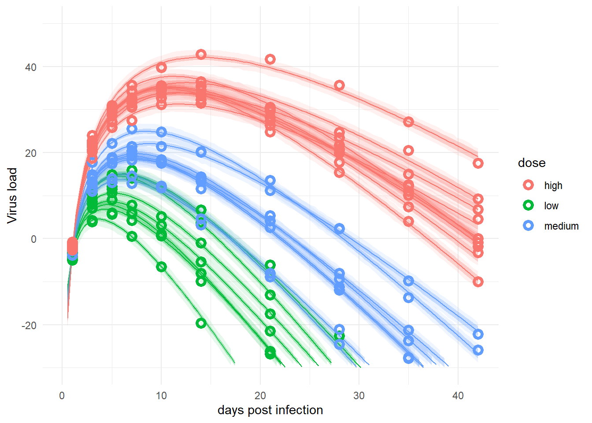

library('dplyr') # for data manipulation
library('ggplot2') # for plotting
library('cmdstanr') #for model fitting
library('rethinking') #for model fitting
library('fs') #for file pathThis is a continuation with some side analyses of this tutorial illustrating how one can use the brms and rethinking R packages to perform a Bayesian analysis of longitudinal data using a multilevel/hierarchical/mixed-effects setup.
Introduction
I assume you read through the main posts of the tutorial, namely this one describing model setup and data generation, and this one describing fitting with rethinking. You probably also looked at the fitting with brms post, though that’s optional for following along with this post.
Here, I’m doing a few additional explorations that just didn’t fit into the other posts. I’m doing all of these with rethinking.
Who this is (not) for
This is only for you if you read my main tutorial posts and enjoyed my musings and explorations enough that you want to see some more stuff 😁.
R setup
Again as previously, the code shown below are housed in 2 separate R scripts, which you can get here and here. You can run the scripts one after the other. The code chunks don’t quite show up in that order in this post.
We need the same packages as previously. See comments in previous posts on how to get Stan installed and working.
Defining a few functions
For the explorations below, I will repeat some parts, specifically the fitting, predicting and plotting components. For simplicity and to streamline code, I defined a few functions that I’m using repeatedly.
This function specifies the fitting part:
######################################
# Function to fit each model
######################################
# function to run fit so I don't need to keep repeating
# some parameters are set globally.
# not very clean code but good enough for here :)
fitfunction <- function(model, data, start, constraints)
{
tstart=proc.time(); #capture current time
fl$fit <- ulam(flist = model,
data = data,
start=start,
constraints=constraints,
log_lik=TRUE, cmdstan=TRUE,
control=list(adapt_delta=adapt_delta, max_treedepth = max_td),
chains=chains, cores = cores,
warmup = warmup, iter = iter
)# end ulam statement
tend=proc.time(); #capture current time
tdiff=tend-tstart;
runtime_minutes=tdiff[[3]]/60;
#add some more things to the fit object
fl$runtime = runtime_minutes
fl$model = names(model)
return(fl)
}This function does the prediction for the different models:
# defining a function so I don't need to re-type the same code
predfunction <- function(fl,fitdat)
{
#this will contain all the predictions from the different models
fitpred = vector(mode = "list", length = length(fl))
# we are looping over each fitted model
for (n in 1:length(fl))
{
#get current model
nowmodel = fl[[n]]$fit
#make new data for which we want predictions
#specifically, more time points so the curves are smoother
timevec = seq(from = 0.1, to = max(fitdat$time), length=100)
Ntot = max(fitdat$id)
#new data used for predictions
#make variables for all versions of dose we use
preddat = data.frame( id = sort(rep(seq(1,Ntot),length(timevec))),
time = rep(timevec,Ntot),
dose = 0,
dose_adj = 0,
dose_adj2 = 0,
dose_cat = "0",
dose_cat2 = 0
)
#add right dose information for each individual
#this could likely be coded better
for (k in 1:Ntot)
{
#get actual dose for a given individual
#assign that dose
#if statements because not every data set/model has each dose type
if ("dose" %in% names(fitdat)) {
nowdose = unique(fitdat$dose[fitdat$id == k])
preddat[(preddat$id == k),"dose"] = nowdose
}
if ("dose_adj" %in% names(fitdat)) {
nowdose_adj = unique(fitdat$dose_adj[fitdat$id == k])
preddat[(preddat$id == k),"dose_adj"] = nowdose_adj
}
if ("dose_adj2" %in% names(fitdat)) {
nowdose_adj2 = unique(fitdat$dose_adj2[fitdat$id == k])
preddat[(preddat$id == k),"dose_adj2"] = nowdose_adj2
}
if ("dose_cat" %in% names(fitdat)) {
nowdose_cat = unique(fitdat$dose_cat[fitdat$id == k])
preddat[(preddat$id == k),"dose_cat"] = as.character(nowdose_cat)
}
if ("dose_cat2" %in% names(fitdat)) {
nowdose_cat2 = unique(fitdat$dose_cat2[fitdat$id == k])
preddat[(preddat$id == k),"dose_cat2"] = nowdose_cat2
}
}
# pull out posterior samples for the parameters
post <- extract.samples(nowmodel)
# estimate and CI for parameter variation
# this uses the link function from rethinking
# we ask for predictions for the new data generated above
linkmod <- rethinking::link(nowmodel, data = preddat)
#computing mean and various credibility intervals
#these choices are inspired by the Statistical Rethinking book
#and purposefully do not include 95%
#to minimize thoughts of statistical significance
#significance is not applicable here since we are doing bayesian fitting
modmean <- apply( linkmod$mu , 2 , mean )
modPI79 <- apply( linkmod$mu , 2 , PI , prob=0.79 )
modPI89 <- apply( linkmod$mu , 2 , PI , prob=0.89 )
modPI97 <- apply( linkmod$mu , 2 , PI , prob=0.97 )
# estimate and CI for prediction intervals
# this uses the sim function from rethinking
# the predictions factor in additional uncertainty around the mean (mu)
# as indicated by sigma
simmod <- rethinking::sim(nowmodel, data = preddat)
# mean and credible intervals for outcome predictions
# modmeansim should agree with above modmean values
modmeansim <- apply( simmod , 2 , mean )
modPIsim <- apply( simmod , 2 , PI , prob=0.89 )
#place all predictions into a data frame
#and store in a list for each model
fitpred[[n]] = data.frame(id = as.factor(preddat$id),
dose = preddat$dose_cat,
predtime = preddat$time,
Estimate = modmean,
Q79lo = modPI79[1,], Q79hi = modPI79[2,],
Q89lo = modPI89[1,], Q89hi = modPI89[2,],
Q97lo = modPI97[1,], Q97hi = modPI97[2,],
Qsimlo=modPIsim[1,], Qsimhi=modPIsim[2,]
)
} #end loop over all models
return(fitpred)
} #end function computing predictionsThis function does the plotting:
# defining a function so I don't need to re-type the same code
plotfunction <- function(fl,fitpred,fitdat)
{
#list for storing all plots
plotlist = vector(mode = "list", length = length(fl))
#small data adjustment for plotting
plotdat <- fitdat %>% data.frame() %>%
mutate(id = as.factor(id)) %>%
mutate(dose = dose_cat)
#looping over all models, creating and storing a plot for each
for (n in 1:length(fl))
{
#adding titles to plots
title = fl[[n]]$model
plotlist[[n]] <- ggplot(data = fitpred[[n]], aes(x = predtime, y = Estimate, group = id, color = dose )) +
geom_line(show.legend = F ) +
geom_ribbon(aes(x=predtime, ymin=Q89lo, ymax=Q89hi, fill = dose, color = NULL), alpha=0.3, show.legend = F) +
geom_ribbon(aes(x=predtime, ymin=Qsimlo, ymax=Qsimhi, fill = dose, color = NULL), alpha=0.1, show.legend = F) +
geom_point(data = plotdat, aes(x = time, y = outcome, group = id, color = dose), shape = 1, size = 2, stroke = 2) +
scale_y_continuous(limits = c(-30,50)) +
labs(y = "Virus load",
x = "days post infection") +
theme_minimal() +
ggtitle(title)
}
return(plotlist)
} #end function making plotsThese are the settings we use for all fits shown in this post:
######################################
# Define general fit settings
######################################
#general settings for fitting
#you might want to adjust based on your computer
warmup = 6000
iter = warmup + floor(warmup/2)
max_td = 18 #tree depth
adapt_delta = 0.9999
chains = 5
cores = chains
seed = 123With these function definitions and specifications out of the way, we can get to some more model explorations.
Alternative model for time-series trajectory
In the main tutorial, I used the following two-parameter model to describe hypothetical virus-load time series for an acute virus infection.
\[ \mu_{i,t} = \log\left( t_i^{\alpha_i} e^{-\beta_i t_i} \right) \]
I mentioned there that this equation does in fact not capture real data too well. For our research project, we used a somewhat more flexible equation, given as
\[ \mu_{i,t} = \log\left( \frac{2 p_i}{e^{-g_i (k_i - t_i)} + e^{d_i (t_i - k_i)}}\right). \]
Instead of two parameters, this model has 4. The parameters approximately represent virus peak, \(p_i\), initial growth rate, \(g_i\), decay rate, \(d_i\), and time of peak, \(k_i\). Colleagues showed previously that this can fit virus load data for acute infections fairly well. The original use was for influenza, we found that it also worked reasonably well for our norovirus data, and thus used it. For the tutorial, I decided to stick to the simpler 2-parameter model. But everything I discussed there applies to this alternative model. For all 4 parameters, we can define individual-level and population level parameters, make them dose-dependent, etc. The main models for the 4 parameters are:
\[ \begin{aligned} p_{i} & = p_{0,i} + p_1 x_i \\ g_{i} & = g_{0,i} + g_1 x_i \\ d_{i} & = d_{0,i} + d_1 x_i \\ k_{i} & = k_{0,i} + k_1 x_i \\ \end{aligned} \]
In this notation, \(x_i\) is the dose, transformed and scaled as needed.
The same ideas about model specification, exponentiating to avoid negative values, and all of that still applies. You now need to specify priors for the parameters in each of the four equations above, instead of the 2 equations we had previously. It’s conceptionally the same, just a bit more typing and coding. Since there isn’t anything fundamentally new to show or learn, I’m not implementing the code. I’m confident once you walked through the prior posts in the tutorial, you can copy & paste your way to working code for this bigger model. So if you feel like it, go ahead and implement the above model, both to simulate data and then to fit it.
The model you use to simulate data does not have to be the same you use to fit it. You could for instance try to simulate data with the 2-parameter model and fit with the 4-parameter one, or the reverse. I haven’t tried it, but I expect that using the 2-parameter model to simulate data and the 4-parameter model to fit should work ok (since the 4 parameter model is flexible enough) but the reverse is likely not working too well. In either case, the fits are likely worse than if you use the same model to simulate the data and fit it. That’s not surprising.
It illustrates the point that choosing the right main function (likelihood and deterministic part), is at least as important - probably more so - than setting priors. Most non-Bayesians get hung up about priors, but the dirty (somewhat)-secret is that the overall model specification - which needs to be done for both frequentist and Bayesian fitting - often has a much more pronounced impact, and choosing the model structure is always based on expertise (or convention, though that’s a bad reason), and there are no real rules.
Fitting an alternative data set
For the main tutorial, I used one of the simulated data sets (as generated by model 3) for fitting purposes, since it had the most realistic structure. But we can of course try to fit the other data sets as well. Here, I’m doing a quick exploration using data set 2. That was the one generated by model 2, which did not have any individual-level variability. Recall that model 2 did not run well at all, while model 2a (basically the same model, just better specified) worked ok, though the fit was not great. Let’s see how model 2a does when fitting to a data that has the right overall structure. We’ll compare it to model 4.
Here are the two models we want to fit:
#full-pooling model, population-level parameters only
m2a <- alist(
outcome ~ dnorm(mu, sigma),
mu <- exp(alpha)*log(time) - exp(beta)*time,
alpha <- a0 + a1*dose_adj,
beta <- b0 + b1*dose_adj,
a0 ~ dnorm(2, 0.1),
b0 ~ dnorm(0.5, 0.1),
a1 ~ dnorm(0.3, 1),
b1 ~ dnorm(-0.3, 1),
sigma ~ cauchy(0,1)
)#adaptive priors, partial-pooling model
m4 <- alist(
outcome ~ dnorm(mu, sigma),
mu <- exp(alpha)*log(time) - exp(beta)*time,
alpha <- a0[id] + a1*dose_adj,
beta <- b0[id] + b1*dose_adj,
a0[id] ~ dnorm(mu_a, sigma_a),
b0[id] ~ dnorm(mu_b, sigma_b),
mu_a ~ dnorm(2, 1),
mu_b ~ dnorm(0.5, 1),
sigma_a ~ cauchy(0, 1),
sigma_b ~ cauchy(0, 1),
a1 ~ dnorm(0.3, 1),
b1 ~ dnorm(-0.3, 1),
sigma ~ cauchy(0, 1)
)Setup for fitting these models:
######################################
# Model fit to alternative data set
######################################
#stick all models into a list
modellist = list(m2a=m2a, m4=m4)
# set up a list in which we'll store our results
fl = vector(mode = "list", length = length(modellist))
#now fitting dataset 2 we produced in the first post
#also removing anything in the dataframe that's not used for fitting
#makes the ulam/Stan code more robust
simdat <- readRDS("simdat.Rds")
fitdat = list(id=simdat[[2]]$id,
outcome = simdat[[2]]$outcome,
dose_adj = simdat[[2]]$dose_adj,
dose_cat = simdat[[3]]$dose_cat,
time = simdat[[2]]$time)
#pulling out number of observations
Ntot = length(unique(fitdat$id))
## Setting starting values
#starting values for model 2
startm2a = list(a0 = 2, b0 = 0.5, a1 = 0.5 , b1 = -0.5, sigma = 1)
#starting values for model 4
startm4 = list(mu_a = 2, sigma_a = 1, mu_b = 0, sigma_b = 1, a1 = 0.5 , b1 = -0.5, sigma = 1)
#put different starting values in list
#need to be in same order as models below
startlist = list(startm2a,startm4)
# defining constraints on parameters
constm2a = list(sigma="lower=0")
constm4 = list(sigma="lower=0")
constraintlist = list(constm2a,constm4)Running the fits:
fl <- NULL
for (n in 1:length(modellist))
{
cat('************** \n')
cat('starting model', names(modellist[n]), '\n')
fl[[n]] <- fitfunction(model = modellist[[n]],
data = fitdat,
start = startlist[[n]],
constraints = constraintlist[[n]])
cat('model fit took this many minutes:', fl[[n]]$runtime, '\n')
cat('************** \n')
}
# saving the results so we can use them later
filepath = fs::path("D:","Dropbox","datafiles","longitudinalbayes","ulamfits_dat2", ext="Rds")
saveRDS(fl,filepath)Let’s see what we get for the fits to this changed data set.
#loading previously saved fits.
filepath = fs::path("D:","Dropbox","datafiles","longitudinalbayes","ulamfits_dat2", ext="Rds")
fl <- readRDS(filepath)
fitdat <- fl[[1]]$fit@data#Model 2a
print(precis(fl[[1]]$fit,depth=1),digits = 2) mean sd 5.5% 94.5% n_eff Rhat4
a0 3.00 0.0030 2.994 3.003 5591 1
b0 1.00 0.0027 0.995 1.004 5885 1
a1 0.10 0.0014 0.098 0.102 6691 1
b1 -0.10 0.0013 -0.102 -0.098 7868 1
sigma 0.99 0.0440 0.925 1.066 7717 1#Model 4
a0mean = mean(precis(fl[[2]]$fit,depth=2,"a0")$mean)
b0mean = mean(precis(fl[[2]]$fit,depth=2,"b0")$mean)
print(precis(fl[[2]]$fit,depth=1),digits = 2)48 vector or matrix parameters hidden. Use depth=2 to show them. mean sd 5.5% 94.5% n_eff Rhat4
mu_a 3.0000 0.0031 2.99494 3.0048 545 1
mu_b 1.0005 0.0028 0.99586 1.0050 581 1
sigma_a 0.0018 0.0013 0.00018 0.0041 218 1
sigma_b 0.0023 0.0015 0.00030 0.0049 338 1
a1 0.0998 0.0014 0.09758 0.1021 2209 1
b1 -0.1001 0.0013 -0.10217 -0.0980 4232 1
sigma 0.9854 0.0448 0.91690 1.0585 4520 1print(c(a0mean,b0mean))[1] 2.999965 1.000551The estimates for the parameters are fairly similar. Model 2a actually seems to work a bit better here, since the model structure and the data structure are a close match.
Comparison of the models using WAIC confirms that model 2a now does well:
comp <- compare(fl[[1]]$fit,fl[[2]]$fit)
print(comp) WAIC SE dWAIC dSE pWAIC weight
fl[[1]]$fit 749.8964 22.94737 0.000000 NA 5.001198 0.8273078
fl[[2]]$fit 753.0297 23.14726 3.133333 2.350631 11.154308 0.1726922Let’s look at plots to further see if/how the models differ. First we need to make predictions, then we can plot.
fitpred <- predfunction(fl,fitdat)plotlist <- plotfunction(fl,fitpred,fitdat)
plot(plotlist[[1]])
plot(plotlist[[2]])
For this data set, with little individual-level variation, the simpler model and the more complex one perform more or less equally well. Depending on the amount of noise (\(\sigma\) in the model), at some point we can expect the simple model to not capture things too well anymore.
Generally speaking, model choice should be driven by the underlying scientific assumptions. If one expects no or almost no variation between the individual units (e.g., people in our case, but it could be anything else), then a simple model that ignores individual-level variation might be ok. In most cases, a model that allows for such variation is likely more appropriate. Especially since the adaptive pooling model allows the model to learn the amount of variation that best describes the data, thus it seems - apart from a bit more complex model setup and a longer run time - there is essentially no downside to the more flexible type of model. The minor downside is potentially larger uncertainty for those cases where a simpler model is suitable. The downside is more bias/risk of underfitting for the simpler model. It’s always possible to try it both ways.
Fitting a larger data set
The number of individuals in our simulated data in the main tutorial is low. That was motivated by the real data we had. But since the data are simulated, we can explore how things might or might not change if we increase the data. I was especially interested to see how the estimates for \(a_1\) and \(b_1\) might change with larger samples.
To get larger samples, I ran the simulation script shown in part 1 with a 10 times larger sample size for each group. Everything else stayed the same. Here is the code that fits model 4 to the larger data set.
Setting up things.
######################################
# Model fit to bigger data set
######################################
#stick all models into a list
modellist = list(m4=m4)
# set up a list in which we'll store our results
fits = vector(mode = "list", length = length(modellist))
#fitting dataset with larger sample size
simdat <- readRDS("simdat_big.Rds")
fitdat=list(id=simdat[[3]]$id,
outcome = simdat[[3]]$outcome,
dose_adj = simdat[[3]]$dose_adj,
dose_cat = simdat[[3]]$dose_cat,
time = simdat[[3]]$time
)
#starting values for model 4
startm4 = list(mu_a = 2, sigma_a = 1, mu_b = 0, sigma_b = 1, a1 = 0.5 , b1 = -0.5, sigma = 1)
startlist = list(startm4)
# defining constraints on parameters
constm4 = list(sigma="lower=0",sigma_a="lower=0",sigma_b="lower=0")
constraintlist = list(constm4)Running the fits.
# fitting model
fl <- NULL
cat('************** \n')
cat('starting model', names(modellist[1]), '\n')
fl[[1]] <- fitfunction(model = modellist[[1]],
data = fitdat,
start = startlist[[1]],
constraints = constraintlist[[1]])
cat('model fit took this many minutes:', fl[[1]]$runtime, '\n')
cat('************** \n')
# saving the results so we can use them later
filepath = fs::path("D:","Dropbox","datafiles","longitudinalbayes","ulamfits_big", ext="Rds")
saveRDS(fl,filepath)#loading previously saved fits.
filepath = fs::path("D:","Dropbox","datafiles","longitudinalbayes","ulamfits_big", ext="Rds")
fl <- readRDS(filepath)
fitdat <- fl[[1]]$fit@dataExploring model fits
a0mean = mean(precis(fl[[1]]$fit,depth=2,"a0")$mean)
b0mean = mean(precis(fl[[1]]$fit,depth=2,"b0")$mean)
print(precis(fl[[1]]$fit,depth=1),digits = 2)480 vector or matrix parameters hidden. Use depth=2 to show them. mean sd 5.5% 94.5% n_eff Rhat4
mu_a 3.004 0.0066 2.993 3.014 22580 1
mu_b 0.999 0.0063 0.989 1.009 24493 1
sigma_a 0.103 0.0048 0.095 0.111 29459 1
sigma_b 0.097 0.0045 0.090 0.104 27303 1
a1 0.099 0.0036 0.093 0.105 643 1
b1 -0.099 0.0035 -0.105 -0.094 628 1
sigma 1.015 0.0156 0.991 1.041 18468 1print(c(a0mean,b0mean))[1] 3.0039243 0.9992366Note the message about the hidden parameters, it’s 10 times as many as previously, since we have \(N\) increased by a factor of 10. If we compare these estimates to those for model 4 in part 2, we notice that the credible intervals shrank, i.e. the precision increased. This is expected for larger sample size. So, reassuringly, larger sample size behaves as expected, helping the model to make more precise estimates. This should also lead to narrower uncertainty intervals for the predictions. Let’s check:
fitpred <- predfunction(fl,fitdat)plotlist <- plotfunction(fl,fitpred,fitdat)
#update plot
p1 <- plotlist[[1]] + scale_y_continuous(limits = c(-30,70))
plot(p1)
#save plot so we can use it in the blog post
ggsave(file = paste0("featured.png"), p1, dpi = 300, units = "in", width = 6, height = 6)Looks messy, but overall ok.
Alternative to enforcing positivity of parameters
In the main tutorial, we enforced positivity for the main parameters \(\alpha\) and \(\beta\) through exponentiation. There are other options. An alternative is to ensure they are positive based on the assigned distributions.
As a reminder, our main model describing the mean trajectory of the data is given by
\[ \mu_{i,t} = \log\left( T_i^{\alpha_{i}} e^{-\beta_{i} * T_i} \right) \] Only positive values for \(\alpha_i\) and \(\beta_i\) produce meaningful trajectories. Thus we need to ensure they are positive. In the main tutorial, I did that by exponentiating them, and then rewriting the equation to minimize potential numerical problems.
Another approach is to keep the parameters the way they are, and specify the rest of the model in such a way that they can only be positive. The equations determining \(\alpha_i\) and \(\beta_i\) are for our case the following:
\[ \begin{aligned} \alpha_{i} & = a_{0,i} + a_1 \left(\log (D_i) - \log (D_m)\right) \\ \beta_{i} & = b_{0,i} + b_1 \left(\log (D_i) - \log (D_m)\right) \end{aligned} \] I’m going to make a small change by dropping the subtraction of the middle dose. As discussed, we did that for ease of interpretation but otherwise it wasn’t quite needed. So I’m considering a model of this form
\[ \begin{aligned} \alpha_{i} & = a_{0,i} + a_1 \log (D_i) \\ \beta_{i} & = b_{0,i} + b_1 \log (D_i) \end{aligned} \] We can choose priors for \(a_{0,i}\) and \(b_{0,i}\) that ensure only positive values. However, the priors for \(a_1\) and \(b_1\) should be allowed to be either positive or negative, since we don’t know what impact the dose has. We also don’t know how strong the dose effect is. That means, with the model above, it is tricky to ensure \(\alpha_i\) and \(\beta_i\) are positive.
As mentioned in the main tutorial, we could just leave things as they are and hope that the data will push the fitting routine to reasonable values. That might or might not work, so let’s try to help things along. To do so, we’ll rewrite the equations a bit as follows:
\[ \begin{aligned} \alpha_{i} & = a_{0,i} \left( 1 + (a_2-1) \frac{\log (D_i)}{\max(\log(D_i))} \right) \\ \beta_{i} & = b_{0,i} \left( 1 + (b_2-1) \frac{\log (D_i) }{\max(\log(D_i))} \right) \end{aligned} \]
This maybe strange rewriting does two things. First, we rescaled the dose variable, such that all values are between 0 and 1. Additionally, we replaced the parameters \(a_1\) and \(b_1\) with \(a_1 = (a_2-1) a_{0,i}\) and \(b_1 = (b_2-1) a_{0,i}\) and reorganized the equation.
This rewriting doesn’t change the model, but it helps us to now more easily define priors that enforce the equations to be positive. If we give all parameters priors that are positive, it will ensure that the part related to the dose only goes as low as -1 (if \(a_2\) or \(b_2\) are zero), which means the full equations can only go down to 0 and not lower. These priors should work:
\[ \begin{aligned} a_{0,i} \sim \mathrm{LogNormal}(\mu_a, \sigma_a) \\ b_{0,i} \sim \mathrm{LogNormal}(\mu_b, \sigma_b) \\ a_{2} \sim \mathrm{LogNormal}(0, 1) \\ b_{2} \sim \mathrm{LogNormal}(0, 1) \\ \end{aligned} \]
This implements again the adaptive pooling strategy, like we did previously for model 4.
With these choices, we now ensure that \(\alpha_i\) and \(\beta_i\) can not become negative. Let’s run the model using rethinking to see how it works. I’m comparing it to the previous model 4. Note the different forms of dose that are used in the models, corresponding to the equations just discussed. (I know I used 4a and 5 as model labels previously. The ones I’m calling 4a and 5 here are different/new 😁.)
#adaptive priors, partial-pooling model
#no middle dose subtraction
m4a <- alist(
outcome ~ dnorm(mu, sigma),
mu <- exp(alpha)*log(time) - exp(beta)*time,
alpha <- a0[id] + a1 * dose,
beta <- b0[id] + b1 * dose,
a0[id] ~ dnorm(mu_a, sigma_a),
b0[id] ~ dnorm(mu_b, sigma_b),
mu_a ~ dnorm(2, 1),
mu_b ~ dnorm(0.5, 1),
sigma_a ~ cauchy(0, 1),
sigma_b ~ cauchy(0, 1),
a1 ~ dnorm(0.3, 1),
b1 ~ dnorm(-0.3, 1),
sigma ~ cauchy(0, 1)
)# different way of enforcing positive parameters
m5 <- alist(
outcome ~ dnorm(mu, sigma),
mu <- exp(alpha)*log(time) - exp(beta)*time,
alpha <- a0[id]*(1 + (a2-1) * dose_adj2),
beta <- b0[id]*(1 + (b2-1) *dose_adj2),
a0[id] ~ dlnorm(mu_a, sigma_a),
b0[id] ~ dlnorm(mu_b, sigma_b),
mu_a ~ dnorm(1, 0.5),
mu_b ~ dnorm(0, 0.5),
sigma_a ~ cauchy(0, 1),
sigma_b ~ cauchy(0, 1),
a2 ~ dlnorm(0, 1),
b2 ~ dlnorm(0, 1),
sigma ~ cauchy(0, 1)
)Here is the setup up for fitting this model. Note the new variable dose_adj2 which is defined as shown in the equations above:
#stick all models into a list
modellist = list(m4a=m4a, m5=m5)
# set up a list in which we'll store our results
fits = vector(mode = "list", length = length(modellist))
#fitting dataset 3 we produced in the earlier post
#also removing anything in the dataframe that's not used for fitting
#makes the ulam/Stan code more robust
#note that we need both dose_adj and an alternative that divides by max dose
#for model 5
simdat <- readRDS("simdat.Rds")
fitdat=list(id=simdat[[3]]$id,
outcome = simdat[[3]]$outcome,
dose = simdat[[3]]$dose,
dose_adj2 = simdat[[3]]$dose/max(simdat[[3]]$dose),
dose_cat = simdat[[3]]$dose_cat,
time = simdat[[3]]$time
)
#pulling out number of observations
Ntot = length(unique(fitdat$id))
#starting values for model 4a
startm4a = list(mu_a = 2, sigma_a = 1, mu_b = 0, sigma_b = 1, a1 = 0.5 , b1 = -0.5, sigma = 1)
#starting values for model 5
startm5 = list(mu_a = 2, sigma_a = 1, mu_b = 0, sigma_b = 1, a1 = 0.2 , b1 = -0.2, sigma = 1)
#put different starting values in list
#need to be in same order as models below
startlist = list(startm4a, startm5)
# defining constraints on parameters
constm4a = list(sigma="lower=0",sigma_a="lower=0",sigma_b="lower=0")
constm5 = list(sigma="lower=0",sigma_a="lower=0",sigma_b="lower=0")
constraintlist = list(constm4a, constm5)Running the fits:
# fitting models
fl <- NULL
for (n in 1:length(modellist))
{
cat('************** \n')
cat('starting model', names(modellist[n]), '\n')
fl[[n]] <- fitfunction(model = modellist[[n]],
data = fitdat,
start = startlist[[n]],
constraints = constraintlist[[n]])
cat('model fit took this many minutes:', fl[[n]]$runtime, '\n')
cat('************** \n')
}
# saving the results so we can use them later
filepath = fs::path("D:","Dropbox","datafiles","longitudinalbayes","ulamfits_altpos", ext="Rds")
saveRDS(fl,filepath)Let’s see what we get with this changed model.
#loading previously saved fits.
filepath = fs::path("D:","Dropbox","datafiles","longitudinalbayes","ulamfits_altpos", ext="Rds")
fl <- readRDS(filepath)
fitdat <- fl[[1]]$fit@dataFor model 4, the estimates for the dose parameters \(a_1\) and \(b_1\) are similar to our previous ones. That’s good, since we are still estimating the impact of changes in (log) dose, as before. The fact that we don’t subtract the middle dose anymore should not impact the estimates of the changes in outcome as dose changes. In contrast, the intercept parameters, \(a_{0,i}\) and \(b_{0,i}\) are now different from previous model fits and the original data generating model. That is also expected, since we generated the data with the model that subtracted the medium dose, but now fit it without that part.
#Model 4a
a0mean = mean(precis(fl[[1]]$fit,depth=2,"a0")$mean)
b0mean = mean(precis(fl[[1]]$fit,depth=2,"b0")$mean)
print(precis(fl[[1]]$fit,depth=1),digits = 2)48 vector or matrix parameters hidden. Use depth=2 to show them. mean sd 5.5% 94.5% n_eff Rhat4
mu_a 2.588 0.055 2.500 2.674 1515 1
mu_b 1.469 0.068 1.360 1.578 1551 1
sigma_a 0.093 0.016 0.071 0.120 6218 1
sigma_b 0.119 0.020 0.092 0.153 7161 1
a1 0.087 0.011 0.070 0.103 1352 1
b1 -0.105 0.013 -0.126 -0.084 1382 1
sigma 1.063 0.051 0.984 1.147 7381 1print(c(a0mean,b0mean))[1] 2.588210 1.469683These are the parameter estimates for model 5.
#Model 5
print(precis(fl[[2]]$fit,depth=1),digits = 2)48 vector or matrix parameters hidden. Use depth=2 to show them. mean sd 5.5% 94.5% n_eff Rhat4
mu_a 0.952 0.0202 0.920 0.984 1670 1
mu_b 0.377 0.0598 0.281 0.470 2024 1
sigma_a 0.031 0.0053 0.024 0.041 6349 1
sigma_b 0.140 0.0233 0.108 0.180 6206 1
a2 1.229 0.0325 1.179 1.280 1510 1
b2 0.507 0.0449 0.442 0.583 1666 1
sigma 1.063 0.0524 0.983 1.150 6566 1a0mean = mean(precis(fl[[2]]$fit,depth=2,"a0")$mean)
b0mean = mean(precis(fl[[2]]$fit,depth=2,"b0")$mean)
print(c(a0mean,b0mean))[1] 2.593450 1.474345To compare those with model 4a, I’m doing the math to convert the \(a_2\) and \(b_2\) parameters to \(a_1\) and \(b_1\).
# computing values that correspond to a1 and b1
a1est = (precis(fl[[2]]$fit,pars="a2")[1,]-1)*a0mean/max(fitdat$dose)
b1est = (precis(fl[[2]]$fit,pars="b2")[1,]-1)*b0mean/max(fitdat$dose)
print(c(a1est,b1est))[1] 0.0857905 -0.1052279These estimates for model 5 are similar to those for model 4a.
We can also compare the two models based on WAIC and run time.
compare(fl[[1]]$fit,fl[[2]]$fit) WAIC SE dWAIC dSE pWAIC weight
fl[[1]]$fit 831.7940 23.34184 0.0000000 NA 42.75312 0.6177683
fl[[2]]$fit 832.7542 23.47192 0.9601733 0.7762243 43.13370 0.3822317The fit quality is more or less the same. Note that model 4a ran faster than model 5, 14 versus 133 minutes.
Finally, let’s do the plots to check that they look more or less the same.
fitpred <- predfunction(fl,fitdat)Now let’s make and look at the plots.
plotlist <- plotfunction(fl,fitpred,fitdat)
plot(plotlist[[1]])
plot(plotlist[[2]])The plots for the 2 models are pretty much the same. That’s good, since those are essentially the same models, just written in different forms. In this case, the original way of writing seems better since it runs faster.
Treating dose as an unordered categorical variable
In the main tutorial, we treated the predictor of interest as continuous. If you have a continuous predictor of interest, that’s generally the best approach. Dose is a bit of a borderline case. We know the exact dose that was given, but it’s not clear that one should assume a linear relation between dose and the model parameters. To explore the possible impact of this assumption, one could try all kinds of functional relationships. But without any good scientific knowledge of how that relation should look, it’s a bit futile. Another option is to try and fit the model with dose treated categorically. At other times, you have a predictor that is categorical from the start, for instance one group receiving treatment and the other not is clearly categorical.
Here is a version of the model we looked at, now with dose treated categorical. I’m only showing this for the adaptive partial pooling model (model 4), but it could also be implemented for the other models.
The equations change as follows
\[ \begin{align} \textrm{Outcome} \\ Y_{i,t} \sim \mathrm{Normal}\left(\mu_{i,t}, \sigma\right) \\ \\ \textrm{Deterministic time-series trajectory} \\ \mu_{i,t} = \exp(\alpha_{i}) \log (t_{i}) -\exp(\beta_{i}) t_{i} \\ \\ \textrm{Deterministic models for main parameters} \\ \alpha_{i} = a_{0,i} + a_1[dose_i] \\ \beta_{i} = b_{0,i} + b_1[dose_i] \\ \\ \textrm{Priors} \\ a_{0,i} \sim \mathrm{Normal}(\mu_a, \sigma_a) \\ b_{0,i} \sim \mathrm{Normal}(\mu_b, \sigma_a) \\ a_1[dose_i] \sim \mathrm{Normal}(0.3, 1) \\ b_1[dose_i] \sim \mathrm{Normal}(-0.3, 1) \\ \mu_a \sim \mathrm{Normal}(2, 1) \\ \mu_b \sim \mathrm{Normal}(0.5, 1) \\ \sigma_a \sim \mathrm{HalfCauchy}(0,1) \\ \sigma_b \sim \mathrm{HalfCauchy}(0,1) \\ \sigma \sim \mathrm{HalfCauchy}(0, 1) \\ \end{align} \]
The difference is that now the parameters \(a_1\) and \(b_1\) depend on the dose category (low/medium/high) of individual \(i\), instead of the actual dose value for that individual. The rest of the model didn’t change. Let’s run this new model, which I call model 6.
Model 6 with dose treated (unordered) categorical. I call the indices for the categorical dose dose_cat2.
#model with dose treated as categorical
m6 <- alist(
outcome ~ dnorm(mu, sigma),
mu <- exp(alpha)*log(time) - exp(beta)*time,
alpha <- a0[id] + a1[dose_cat2],
beta <- b0[id] + b1[dose_cat2],
a0[id] ~ dnorm(mu_a, sigma_a),
b0[id] ~ dnorm(mu_b, sigma_b),
mu_a ~ dnorm(2, 1),
mu_b ~ dnorm(0.5, 1),
sigma_a ~ cauchy(0, 1),
sigma_b ~ cauchy(0, 1),
a1[dose_cat] ~ dnorm(0.3, 1),
b1[dose_cat] ~ dnorm(-0.3, 1),
sigma ~ cauchy(0, 1)
)Set up for fitting, running both this new model and the previous model 4 for comparison:
#stick all models into a list
modellist = list(m4=m4, m6=m6)
# set up a list in which we'll store our results
#note that we use dose_cat for plotting
#ulam wants categories coded as integers, so we make dose_cat2
simdat <- readRDS("simdat.Rds")
fitdat=list(id=simdat[[3]]$id,
outcome = simdat[[3]]$outcome,
dose = simdat[[3]]$dose,
dose_adj = simdat[[3]]$dose_adj,
dose_cat = simdat[[3]]$dose_cat,
dose_cat2 = as.numeric(simdat[[3]]$dose_cat),
time = simdat[[3]]$time)
#pulling out number of observations
Ntot = length(unique(fitdat$id))
#starting values
startm4 = list(mu_a = 2, sigma_a = 1, mu_b = 0, sigma_b = 1, a1 = 0.5 , b1 = -0.5, sigma = 1)
startm6 = list(mu_a = 2, sigma_a = 1, mu_b = 0, sigma_b = 1, a1 = rep(0.3,3) , b1 = rep(-0.3,3), sigma = 1)
startlist = list(startm4, startm6)
# defining constraints on parameters
constm4 = list(sigma="lower=0",sigma_a="lower=0",sigma_b="lower=0")
constm6 = list(sigma="lower=0",sigma_a="lower=0",sigma_b="lower=0")
constraintlist = list(constm4, constm6)Running the fitting:
# fitting model
fl <- NULL
for (n in 1:length(modellist))
{
cat('************** \n')
cat('starting model', names(modellist[n]), '\n')
fl[[n]] <- fitfunction(model = modellist[[n]],
data = fitdat,
start = startlist[[n]],
constraints = constraintlist[[n]])
cat('model fit took this many minutes:', fl[[n]]$runtime, '\n')
cat('************** \n')
}
# saving the results so we can use them later
filepath = fs::path("D:","Dropbox","datafiles","longitudinalbayes","ulamfits_cat", ext="Rds")
saveRDS(fl,filepath)
cat('all done')Let’s see what we get with this changed model.
#loading previously saved fits.
filepath = fs::path("D:","Dropbox","datafiles","longitudinalbayes","ulamfits_cat", ext="Rds")
fl <- readRDS(filepath)
fitdat <- fl[[1]]$fit@dataHere are the coefficients. I’m showing all here, so we can see the dose-related ones (which are level 2 for the categorical one). The first set of coefficients are the previous ones, from model 4, treating dose as continuous. The second set of coefficients is from the categorical dose model.
#Model 4
print(precis(fl[[1]]$fit,depth=2),digits = 2) mean sd 5.5% 94.5% n_eff Rhat4
a0[1] 3.176 0.028 3.132 3.221 3337 1
a0[2] 3.138 0.028 3.094 3.184 3494 1
a0[3] 2.943 0.030 2.895 2.990 3779 1
a0[4] 2.877 0.030 2.829 2.925 3892 1
a0[5] 2.920 0.030 2.872 2.967 3665 1
a0[6] 3.011 0.029 2.965 3.057 3505 1
a0[7] 2.961 0.030 2.914 3.008 4024 1
a0[8] 2.984 0.015 2.959 3.008 12342 1
a0[9] 2.911 0.016 2.885 2.936 12920 1
a0[10] 2.984 0.015 2.960 3.008 12193 1
a0[11] 2.939 0.016 2.914 2.964 11111 1
a0[12] 2.845 0.017 2.818 2.873 12133 1
a0[13] 2.972 0.015 2.948 2.995 12117 1
a0[14] 3.089 0.014 3.067 3.110 11179 1
a0[15] 2.950 0.015 2.925 2.974 12608 1
a0[16] 3.084 0.026 3.042 3.125 2949 1
a0[17] 2.866 0.027 2.822 2.909 3032 1
a0[18] 3.041 0.026 2.998 3.082 2970 1
a0[19] 3.073 0.026 3.032 3.116 2864 1
a0[20] 3.047 0.026 3.005 3.089 3051 1
a0[21] 3.023 0.027 2.980 3.065 3033 1
a0[22] 2.976 0.027 2.933 3.019 2918 1
a0[23] 2.967 0.027 2.924 3.009 2862 1
a0[24] 2.916 0.027 2.872 2.958 3039 1
b0[1] 0.992 0.032 0.942 1.044 2805 1
b0[2] 0.896 0.032 0.845 0.947 2911 1
b0[3] 0.941 0.032 0.889 0.991 2887 1
b0[4] 0.960 0.032 0.910 1.010 2861 1
b0[5] 1.178 0.031 1.128 1.227 2750 1
b0[6] 0.928 0.032 0.877 0.979 2896 1
b0[7] 1.018 0.032 0.967 1.068 2848 1
b0[8] 1.015 0.014 0.993 1.036 12171 1
b0[9] 0.910 0.015 0.885 0.934 12885 1
b0[10] 0.984 0.014 0.962 1.006 11880 1
b0[11] 1.151 0.012 1.132 1.169 10972 1
b0[12] 1.049 0.013 1.028 1.069 11970 1
b0[13] 1.010 0.013 0.988 1.031 11914 1
b0[14] 0.951 0.014 0.928 0.974 10992 1
b0[15] 0.794 0.017 0.767 0.820 12556 1
b0[16] 1.111 0.034 1.058 1.166 3145 1
b0[17] 0.848 0.036 0.790 0.903 3444 1
b0[18] 1.108 0.034 1.055 1.161 3202 1
b0[19] 1.192 0.033 1.139 1.245 3040 1
b0[20] 0.850 0.036 0.793 0.905 3431 1
b0[21] 1.059 0.034 1.005 1.113 3220 1
b0[22] 0.998 0.034 0.943 1.053 3295 1
b0[23] 0.881 0.035 0.824 0.937 3383 1
b0[24] 0.856 0.035 0.799 0.912 3493 1
mu_a 2.987 0.020 2.955 3.018 15770 1
mu_b 0.987 0.025 0.946 1.027 15800 1
sigma_a 0.093 0.016 0.071 0.121 12658 1
sigma_b 0.119 0.020 0.092 0.153 12519 1
a1 0.086 0.010 0.070 0.103 2500 1
b1 -0.106 0.013 -0.127 -0.086 2583 1
sigma 1.062 0.051 0.981 1.147 12837 1#Model 6
print(precis(fl[[2]]$fit,depth=2),digits = 2) mean sd 5.5% 94.5% n_eff Rhat4
a0[1] 2.671 0.487 1.899 3.45 870 1
a0[2] 2.634 0.487 1.865 3.41 872 1
a0[3] 2.439 0.487 1.666 3.21 871 1
a0[4] 2.373 0.487 1.600 3.15 871 1
a0[5] 2.416 0.487 1.647 3.19 871 1
a0[6] 2.506 0.487 1.735 3.28 870 1
a0[7] 2.457 0.487 1.689 3.23 870 1
a0[8] 2.524 0.487 1.752 3.30 867 1
a0[9] 2.451 0.487 1.680 3.23 867 1
a0[10] 2.525 0.487 1.758 3.30 867 1
a0[11] 2.479 0.487 1.711 3.25 865 1
a0[12] 2.385 0.487 1.615 3.16 868 1
a0[13] 2.512 0.487 1.742 3.29 866 1
a0[14] 2.629 0.487 1.860 3.41 867 1
a0[15] 2.491 0.487 1.721 3.27 867 1
a0[16] 2.584 0.487 1.811 3.36 865 1
a0[17] 2.366 0.487 1.593 3.14 865 1
a0[18] 2.541 0.487 1.765 3.32 865 1
a0[19] 2.574 0.487 1.799 3.35 866 1
a0[20] 2.548 0.486 1.772 3.32 865 1
a0[21] 2.523 0.487 1.749 3.30 865 1
a0[22] 2.476 0.487 1.702 3.26 866 1
a0[23] 2.467 0.487 1.692 3.24 865 1
a0[24] 2.416 0.487 1.640 3.19 865 1
b0[1] 1.114 0.508 0.298 1.97 810 1
b0[2] 1.018 0.508 0.201 1.87 810 1
b0[3] 1.063 0.508 0.245 1.91 810 1
b0[4] 1.082 0.508 0.265 1.93 809 1
b0[5] 1.300 0.508 0.481 2.15 809 1
b0[6] 1.050 0.508 0.234 1.90 809 1
b0[7] 1.140 0.508 0.322 1.99 810 1
b0[8] 1.141 0.509 0.315 1.99 818 1
b0[9] 1.036 0.509 0.207 1.89 817 1
b0[10] 1.111 0.509 0.286 1.96 818 1
b0[11] 1.278 0.509 0.449 2.13 816 1
b0[12] 1.175 0.509 0.350 2.02 817 1
b0[13] 1.137 0.509 0.311 1.99 818 1
b0[14] 1.078 0.509 0.252 1.93 818 1
b0[15] 0.920 0.509 0.091 1.77 819 1
b0[16] 1.231 0.508 0.409 2.08 815 1
b0[17] 0.967 0.508 0.142 1.82 817 1
b0[18] 1.228 0.508 0.406 2.08 817 1
b0[19] 1.311 0.508 0.488 2.16 817 1
b0[20] 0.970 0.508 0.147 1.82 816 1
b0[21] 1.179 0.508 0.356 2.03 817 1
b0[22] 1.117 0.508 0.293 1.97 818 1
b0[23] 1.000 0.508 0.175 1.85 817 1
b0[24] 0.976 0.509 0.149 1.82 818 1
mu_a 2.499 0.486 1.730 3.28 866 1
mu_b 1.109 0.507 0.288 1.96 811 1
sigma_a 0.092 0.016 0.070 0.12 3179 1
sigma_b 0.122 0.021 0.094 0.16 2986 1
a1[1] 0.306 0.486 -0.468 1.08 869 1
a1[2] 0.459 0.486 -0.320 1.23 866 1
a1[3] 0.698 0.487 -0.079 1.47 865 1
b1[1] 0.123 0.508 -0.726 0.94 809 1
b1[2] -0.127 0.509 -0.978 0.70 817 1
b1[3] -0.364 0.508 -1.214 0.46 816 1
sigma 1.063 0.051 0.986 1.15 3024 1The \(a_1\) and \(b_1\) coefficients are the interesting ones. We now have a different estimate for each dose. The values for \(a_1\) increase with dose and the values for \(b_1\) decrease with dose. This is consistent with the linear/continuous model and the way we generated the data.
We can compare this model to the continuous one in terms of WAIC
compare(fl[[1]]$fit,fl[[2]]$fit) WAIC SE dWAIC dSE pWAIC weight
fl[[1]]$fit 831.1873 23.32505 0.0000000 NA 42.55486 0.5897949
fl[[2]]$fit 831.9135 23.34799 0.7262354 0.4992692 42.89880 0.4102051The models are comparable with that metric.
Let’s compute predictions so we can plot.
fitpred <- predfunction(fl,fitdat)Now let’s make and look at the plots.
plotlist <- plotfunction(fl,fitpred,fitdat)
plot(plotlist[[1]])plot(plotlist[[2]])The plot looks reasonable, so treating dose here as categorical seems to lead to similar results as treating it continuous. It’s a scientific question/decision on how to do it. In general, if there are reasons for either approach, my suggestion is to do it both ways and report the additional results as sensitivity analyses.
A model that “doesn’t work”
When we originally scribbled down models that we might use to fit our data, we came up with this model.
\[ \begin{align} \textrm{Outcome} \\ Y_{i,t} \sim \mathrm{Normal}\left(\mu_{i,t}, \sigma\right) \\ \\ \textrm{Deterministic time-series trajectory} \\ \mu_{i,t} = \exp(\alpha_{i}) \log (t_{i}) -\exp(\beta_{i}) t_{i} \\ \\ \textrm{Distribution for main parameters} \\ \alpha_{i} \sim \mathrm{Normal}\left(am_{i}, \sigma_a \right) \\ \beta_{i} \sim \mathrm{Normal}\left(bm_{i}, \sigma_b \right) \\ \\ \textrm{Deterministic models for main parameters} \\ am_{i} = a_{0,i} + a_1 \left(\log (D_i) - \log (D_m)\right) \\ bm_{i} = b_{0,i} + b_1 \left(\log (D_i) - \log (D_m)\right) \\ \\ \textrm{Distribution for (hyper)parameters} \\ a_{0,i} \sim \mathrm{Normal}(2, 0.1) \\ a_{1} \sim \mathrm{Normal}(0.5, 0.1) \\ b_{0,i} \sim \mathrm{Normal}(0, 0.1) \\ b_{1} \sim \mathrm{Normal}(-0.5, 0.1) \\ \sigma_a \sim \mathrm{HalfCauchy}(0,1) \\ \sigma_b \sim \mathrm{HalfCauchy}(0,1) \\ \sigma \sim \mathrm{HalfCauchy}(0,1) \end{align} \]
The model is similar to models 1-3, but with another distribution for parameters \(\alpha_i\) and \(\beta_i\). Fitting this model didn’t work, the fitting routine kept choking. We concluded that with this model we are overfitting. However, I am also not sure if there is something more fundamentally wrong in the way we wrote down this model. I’m not sure if a mix of having parameters defined by equations, then as distributions and equations again is a generally wrong way. This is currently beyond my Bayesian understanding. Feedback appreciated 😄.
It is straightforward to translate the model to rethinking or brms code, but since it didn’t fit well, and I’m not even sure if it’s a “proper” model, there’s no point in showing the code. Implement it if you want, and let me know if you have some insights into what exactly might be wrong with the model.
Summary
This post contained a few more explorations of alternative models and model implementations. I know I didn’t provide as much explanation and detail as I did for the main tutorials. Hopefully, seeing these additional examples is still somewhat helpful. And you know what comes now: For more/real learning of that stuff, you should really check out Statistical Rethinking 😁.
More things to try
This section is mainly for myself, some ideas for further extensions. Here are additional topics I can think of. Feel free to provide feedback if you want me to cover some other aspects (no promises of course, it depends on my time and understanding 😄).
- Treating dose as an ordered categorical variable. I started that, but haven’t finished yet. Hopefully will show up here soon.
- Using a scientific/mechanistic/process model based on differential equations to describe the main time-series trajectory.
- Exploring individual level variation in dose-dependence, i.e. \(a_{1,i}\), \(b_{1,i}\) parameters.
- Implementing some of the models in a fully frequentist framework and comparing.
Citation
BibTeX citation:
@online{handel2022,
author = {Andreas Handel},
editor = {},
title = {Bayesian Analysis of Longitudinal Multilevel Data Using Brms
and Rethinking - Part 4},
date = {2022-02-25},
url = {https://www.andreashandel.com/posts/2022-02-25-longitudinal-multilevel-bayes-4},
langid = {en}
}
For attribution, please cite this work as:
Andreas Handel. 2022. “Bayesian Analysis of Longitudinal
Multilevel Data Using Brms and Rethinking - Part 4.” February 25,
2022. https://www.andreashandel.com/posts/2022-02-25-longitudinal-multilevel-bayes-4.